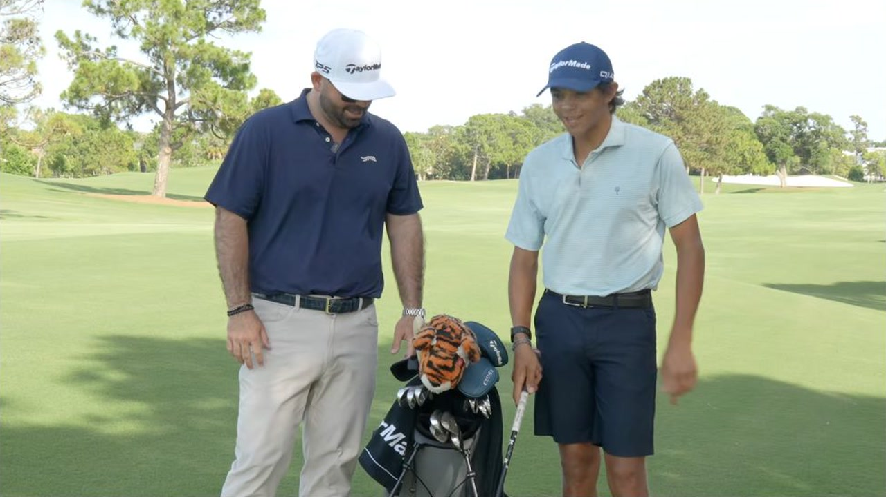
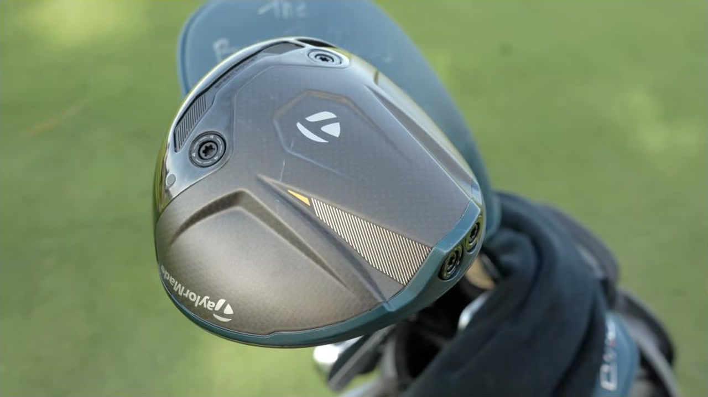
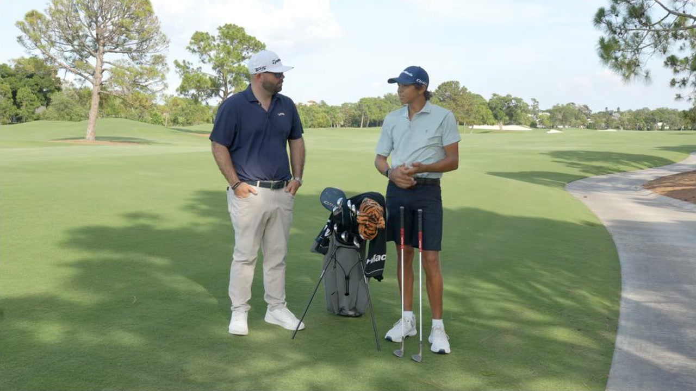

Executive summary
The bag has a fixed core and one deliberate variable
Charlie carries a stable 13-club core and uses the final slot for either a P770 driving iron set to 20° or a Qi4D 7-wood. The driving iron is the tee and firm-condition tool. The 7-wood is the high-launch, rough-friendly approach tool. The course decides which one completes the bag.
Everything else follows the same logic. The Qi4D driver is cosmetically adjusted so Charlie sees more face at address. The irons sit roughly three degrees flat because of how he delivers the club. His P7TW pitching wedge is 49°, which removes the need for a conventional gap wedge. The high-bounce 60° is ground so it can still sit flush when opened. Even the grip changes at the wedges because he rarely uses them square.
Distance boundary. The video gives one practical tee number for the mini driver, approximately 280–285 yards. It does not provide a complete carry chart. The 7-wood's “20–30 yards both ways” describes how much Charlie can vary shape or window, not its stock carry distance.
Complete configuration
The 13+1 bag map
| Slot | Head | Configuration | Role in the system | Time |
|---|---|---|---|---|
| Driver | TaylorMade Qi4D | 9° standard loft · Tour AD shaft; exact model and flex are not stated in the spoken segment | Primary tee club. Small cosmetic changes expose more of the face at address and better match Charlie's preferred visual. | 0:44 |
| Mini driver | TaylorMade R7 Quad Mini | Diamana White Board profile using a former 3-wood shaft | Permanent control club for tighter par fours. The stated planning number is roughly 280–285 yards, and Charlie also likes it from the deck. | 1:38 |
| Rotation A | TaylorMade P770 3-iron | 20° after being weakened from 19° · hybrid shaft; exact model is not stated | Preferred from the tee and still high enough to attack par-five greens. Less useful from thick rough. | 2:51 |
| Rotation B | TaylorMade Qi4D 7-wood | Fujikura Ventus Black VeloCore+ 8X · tipped 2 inches | Long-course and heavy-rough option. Easier into greens and highly shapeable, but not as strong a tee tool as the driving iron. | 4:08 |
| 3–4 irons | TaylorMade P7CB | Dynamic Gold X100 · approximately 3° flat | The more forgiving bridge below the rotating top-end club. | 5:43 |
| 5-iron–PW | TaylorMade P7TW | Dynamic Gold X100 · approximately 3° flat · PW at 49° | Workability-first scoring set inspired by Tiger's irons. Charlie rarely wants a stock straight shot. | 6:48 |
| Sand wedge | TaylorMade MG5 | 56° T grind · about 0.5° flat | First dedicated wedge below the 49° pitching wedge; no separate gap wedge. | 9:23 |
| Lob wedge | TaylorMade MG5 | 60° · 11° bounce · wide-sole SX configuration described in the video · about 0.5° flat | Can be driven low with the leading edge or opened while still sitting flush; especially effective from bunkers. | 10:21 |
| Putter | Not discussed | Model and setup are not identified in this edit | Counts toward the fixed 13-club core, but the video moves from wedges directly to the ball. | Not stated |
| Ball | TaylorMade TP5 | Changed from Titleist Pro V1x | Lower launch than the previous ball while preserving useful spin around the green. | 12:27 |
With either the P770 3-iron or the Qi4D 7-wood installed, the count resolves to 14: driver, mini driver, one rotating club, two P7CB irons, six P7TW irons, two wedges, and one putter.
The rotating slot
Choose the club for the lie and trajectory, not the printed loft
P770 3-iron at 20°
Goes in when the course demands frequent controlled tee shots. Weakening it from 19° to 20° helped Charlie launch it high enough to hold par-five greens. Its weakness is thick rough.
Qi4D 7-wood
Goes in on longer courses with heavier rough and more long approaches. It launches and lands more softly, escapes rough more reliably, and can be shaped through a large window.
Why the mini stays
The R7 Quad Mini is not part of the rotation. It already owns the 280–285-yard control role and remains usable from the fairway, so the final slot can specialize rather than duplicate it.
The practical rule
Firm course, narrow tee corridors, and useful runout favor the driving iron. Long carries, deep rough, and approaches that must stop favor the 7-wood.

Fitting geometry
The delivery controls the lie angle
Charlie plays the irons about three degrees flat relative to standard, while the wedges are only about half a degree flat. This is not copied blindly from Tiger. Manny's job is to reproduce the geometry that matches Charlie's delivery from set to set.
The video provides a useful failure case. An older 5-iron had drifted roughly three degrees upright from where it belonged. Charlie could not produce his normal cut and kept wondering why the club wanted to draw. Measuring loft and lie exposed the equipment problem. For a player who shapes nearly every iron, a few degrees can change the available start line enough to feel like a swing fault.
Maintenance lesson. Charlie wears sets quickly, especially the 7- and 9-irons. Loft, lie, groove condition, and face wear should be checked periodically; a familiar-looking club can quietly become a different tool.
Combo iron architecture
Forgiveness ends where shot-making takes over
P7CB heads occupy 3- and 4-iron. P7TW blades run from 5-iron through pitching wedge. The split gives the longer irons more help while preserving the workability Charlie wants in the scoring clubs. He says a stock straight shot is unusual; the intended shape changes with wind and target.
The lofts are comparatively weak. Charlie and Manny discuss strengthening part of the middle set by roughly one degree to prevent the flight from climbing in a headwind while keeping the 3-iron unchanged. The first adjusted set produced the desired numbers but looked wrong because the offset presentation changed. The second set kept the performance while restoring the visual he trusted.

Short-game geometry
No gap wedge, but the loft map still makes sense
The P7TW pitching wedge sits at 49°. That is close to the loft many players would call a gap wedge, so Charlie moves directly to 56° and 60°. The labels look unusual only if the pitching-wedge loft is ignored.
The 60° is the more revealing club. It has 11° of bounce and a wide sole, with relief that keeps the back of the sole from obstructing the leading edge. Charlie can lean on the leading edge for a low driven shot, then open the face without the club appearing excessively raised. In sand, the wide sole and bounce provide a large margin for entering behind the ball.

Interfaces and ball flight
Grip reminders stop where the face starts opening
From driver through the iron set, Charlie uses Golf Pride MCC Align grips. Their raised reminder supports a repeatable square relationship. On the 56° and 60°, he switches to round MCC grips because those faces are frequently opened. The reminder that helps a square club becomes an obstruction when the grip must rotate freely.
The TP5 ball solves a different interface problem. Charlie changed from a Pro V1x because TP5 launched slightly lower while retaining spin. His high-lofted irons already create launch, so the lower starting window helps. Around the green, he would rather manage available spin than discover that a low-spin ball cannot produce the shot he needs.
What to copy
Five fitting ideas that transfer to an amateur bag
- Reserve one slot for the course. A hybrid, driving iron, or high-loft fairway wood can rotate without rebuilding the whole bag.
- Measure loft and lie after heavy use. If one iron suddenly refuses to create the normal curve, inspect the tool before rewriting the swing.
- Gap from measured lofts. The number stamped “PW” does not reveal whether a gap wedge is necessary.
- Fit the sole to how the face is used. Bounce, width, and relief determine whether a wedge remains playable square and open.
- Fit ball and grip as part of the system. Launch, spin, and face orientation are influenced by more than the clubhead.
My take
The sophistication is in the relationships
No single component explains the bag. The 7-wood works because it complements the mini driver. The two-wedge setup works because the pitching wedge is 49°. The flat irons work because they match Charlie's delivery. The round wedge grips work because he opens the face. TP5 works because the irons already launch high.
This is what a mature fitting process looks like: not buying fourteen individually impressive products, but making each choice legible in relation to the next one. The most valuable part of the video is Charlie's ability to explain those relationships himself.
Sources and method
What this article is based on
- AJGA Golf · Charlie Woods' TaylorMade Clubs | What's in the Bag?. Primary source for club selection, fitting rationale, stated distances, and timestamps.
- National Club Golfer · Charlie Woods WITB. Used only to resolve product names obscured by the caption track, including the R7 Quad Mini and Qi4D 7-wood. Later bag reports may reflect subsequent changes.
Method: 493 public English-caption rows were reviewed against the visible video and its official description. Four direct 1280×720 video captures illustrate the article. The article preserves the video's June 15, 2026 setup rather than silently replacing it with later WITB reports. Specifications not spoken clearly in the source are labeled as unresolved.